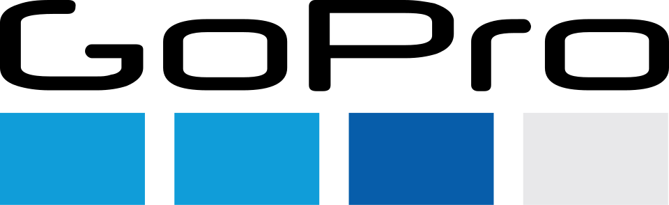

GoPro
GoPro는 2002년 Nick Woodman이 설립한 미국의 테크놀로지 기업이다. 어드벤처 스포츠, 여행 기록, 야외 활동에 널리 쓰이는 바디 카메라를 제조하며 자체 모바일 앱과 영상 편집 소프트웨어를 개발한다.
최종 업데이트

GoPro는 어떤 브랜드인가
GoPro는 미국 캘리포니아주 샌머테이오에 본사를 두고 바디 카메라를 제조하며, 자체적인 모바일 앱과 영상 편집 소프트웨어를 개발하는 기업이다. 카메라는 어드벤처 스포츠, 여행 기록, 야외 활동에 널리 사용되는 제품이다.
카메라 라인업에는 '히어로(Hero)'라는 브랜드가 붙어 있다. 회사는 선수들과 자주 협업하며 2016년 기준 160명의 선수를 후원했다.
마케팅은 사용자 제작 콘텐츠에 크게 의존하여, 고객이 촬영한 영상을 소셜 미디어에 공유하도록 장려한다. 2014년 기업공개를 했으나 2024년 6월 26일 기준 주가는 1.33달러였고, 2026년 6월에는 재정적 어려움을 겪고 있다는 보도가 있었다.
GoPro는 어떻게 시작되고 성장했나
GoPro는 Woodman Labs, Inc로 2002년 Nick Woodman이 설립했다. Nick Woodman은 2002년 호주 서핑 여행 중 고품질의 액션 사진을 찍고 싶었으나, 아마추어 사진가가 충분히 가까이 접근할 수 없고 적절한 품질의 장비를 합리적인 가격에 구입할 수 없다는 점에 동기를 얻었다.
이름은 그와 서핑 친구들이 모두 프로 서퍼를 열망해 'going pro'가 궁극적인 목표였던 데서 생겼다. 그는 부모로부터 사업 투자금으로 23만 달러 이상을 받았고, VW 밴에서 비즈 및 조개 벨트를 팔아 초기 자본 일부를 마련했다.
2004년 9월 샌디에이고의 액션 스포츠 소매업체 무역 박람회에서 35mm HERO 방수 필름 카메라를 선보였다.
GoPro의 브랜드 아이덴티티는 무엇인가
액션 촬영용 바디 카메라 HERO 라인업을 중심으로 하며, 고객이 촬영한 영상을 마케팅의 핵심으로 삼는 점이 특징인 브랜드이다.
GoPro의 대표 제품과 서비스는 무엇인가
대표 제품은 HERO 카메라 라인업이다. 2006년 10초 동영상 촬영 기능이 있는 최초의 디지털 HERO를 출시했고, 2014년 HERO3+와 HERO4, 2017년 9월 HERO6 Black을 내놓았다.
HERO3+는 4K UHD 동영상과 1,200만 화소의 스틸 사진을 지원했다. 2016년 10월에는 쿼드콥터 드론 Karma를 출시했으나 2년 만에 단종되었다.
소프트웨어 분야에서는 2015년 Kolor, 2016년 Stupeflix와 Vemory, 2020년 ReelSteady를 인수했다.
GoPro는 지금 어떤 상태인가
2024년 6월 26일 기준 주가는 1.33달러였다. 2026년 4월에는 아르테미스 2호 임무에서 NASA의 달 주위 임무 장비로 채택되었다.
2026년 6월에는 AI 데이터 위기로 인한 메모리 비용 상승과 매출 감소로 재정적 어려움을 겪고 있다는 보도가 있었고, Reuters는 회사가 매각이나 합병을 포함한 다양한 옵션을 검토할 의사가 있다고 보도했다.
GoPro 로고는 어떻게 변해왔나
자주 묻는 질문
GoPro는 어느 나라 브랜드인가요?
GoPro는 미국의 기술·전자 브랜드입니다.
GoPro는 언제 설립되었나요?
GoPro는 2002년 설립되었습니다.
GoPro의 브랜드 아이덴티티는 무엇인가요?
액션 촬영용 바디 카메라 HERO 라인업을 중심으로 하며, 고객이 촬영한 영상을 마케팅의 핵심으로 삼는 점이 특징인 브랜드이다.
GoPro의 대표 제품은 무엇인가요?
대표 제품은 HERO 카메라 라인업이다.
GoPro는 현재 어떤 상태인가요?
2024년 6월 26일 기준 주가는 1.33달러였다.
GoPro의 창업자는 누구인가요?
GoPro의 창업자는 Nick Woodman입니다(위키데이터 기준).
GoPro의 본사는 어디에 있나요?
GoPro의 본사는 샌머테이오에 있습니다(위키데이터 기준).
출처와 검증
GoPro 관련 참고: 공식 웹사이트 · 위키데이터 Q733482 · 한국어 위키백과 · 영어 위키백과. 브랜드명은 한글과 원어를 함께 표기하되 데이터에 없는 표기는 만들지 않습니다. 기원 국가·설립연도는 검수된 정의문에서 확인된 값을 우선하고, 없을 때만 공식 웹사이트 URL이 일치하는 위키데이터 개체의 값을 씁니다. 연 매출은 미국 증권거래위원회(SEC)에 제출된 연차 보고서(10-K/A)의 XBRL 값이며 달러 금액을 반올림했습니다. 위키데이터 값은 2026-10-25 기준입니다.